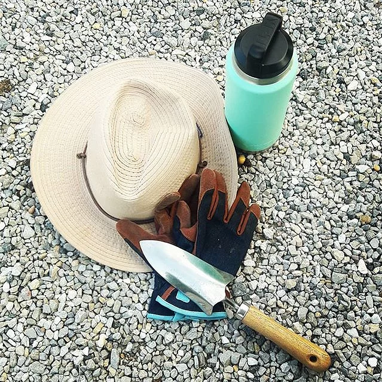
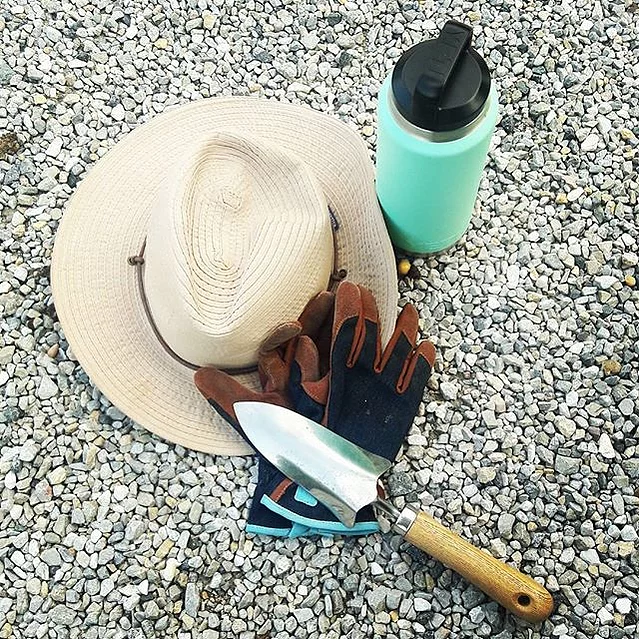
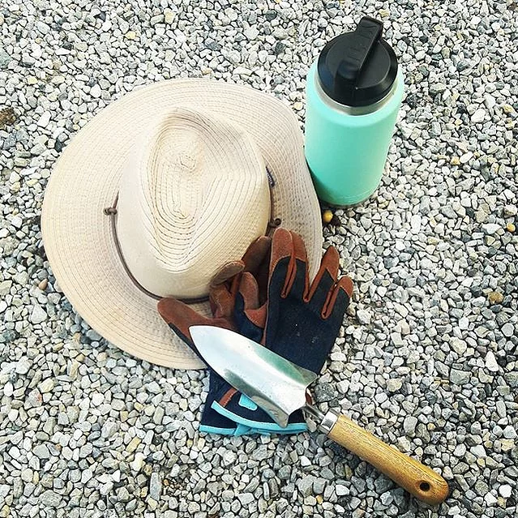

With years of experience in and out of gardens and classrooms, Muslim Gardeners boasts an impressive set of technical and teaching skills. You’re invited to take a peek at some of the projects we worked on. Click on the left!
Volunteering in community gardens is so rewarding, especially if the food harvested is going to soup kitchens and people in need! Children can easily understand the concept of giving and make new friends! In the past, we have volunteered with many organizations including the Barn Community in Allentown PA and the Historic London Town and Gardens in Maryland.
 


We offer classes for adults and children. Our adult class is 4 hours and covers everything you need to begin a garden. Our children's classes are a series of 1 hour explorations. Please click on "Book Online" to learn more about what we have to offer.
Site in construction, thank you for your patience!
Site in construction, thank you for your patience!
Copyright Muslim Gardeners 2021 | Proudly created by Squirrel
Contant muslimgardeners@gmail.com
Facebook| Instagram